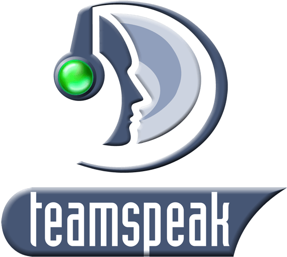

Hensy

Про клан:
- Клан зосереджений на фармі кубів у рандомі! (Соло або взвод)
- Ми також набираємо соло-гравців, нам не обов'язково грати у взводі і сидіти в TeamSpeak
- Якщо гравець неактивний більше 28 днів і він про це не попередив, то його видаляють з клану
- Посада по управлінню резервами дається після 100 днів в клані і тільки через TS (є винятки)
miser.ts33host.xyz - Наш TeamSpeak сервер
Вимоги до гравців:
- Мати відсоток перемог вище 50% і середню шкоду 1000+, особистий рейтинг 5000+
- Рейтинг ефективності WN8 принаймні «жовтий» для XVM
- Середня шкода на топовій техніці (2500+ шкоди, у статистиці)
- Зацікавленість у взводній та соло грі без зобов'язань у колі хороших, умілих гравців
- Наявність TeamSpeak (не обов'язково)
Переваги вступу в клан:
- Красивий і впізнаваний клантаг
- Щоденна активація резервів
- Ніяких зобов'язань перед кланом немає
- Діяльність клану виключно необов'язкова
- Ви завжди можете залишити клан і повернутися назад
Що дають внутрішньокланові резерви?


 Trovo
Trovo
 WoT Clan
WoT Clan
«Не гравець для клану, а клан для гравця»
Hensy - це абревіатура від Hennessy. Hennessy - один з найвідоміших французьких коньячних будинків. Разом з французьким виробником шампанського Moët & Chandon входить до складу французького холдингу Louis Vuitton - Moët Hennessy.
Орден створено 01.03.2019. Пам'ятайте "No mercy"